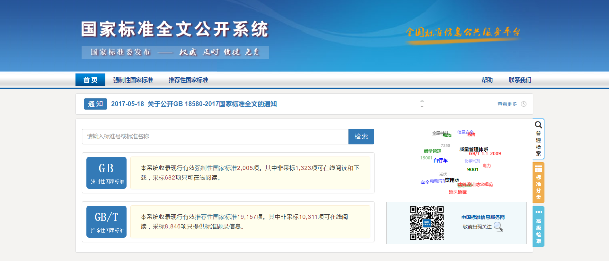
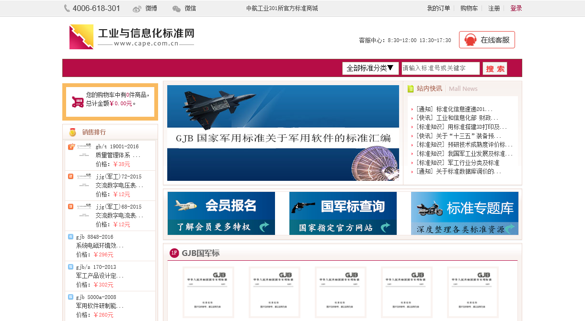
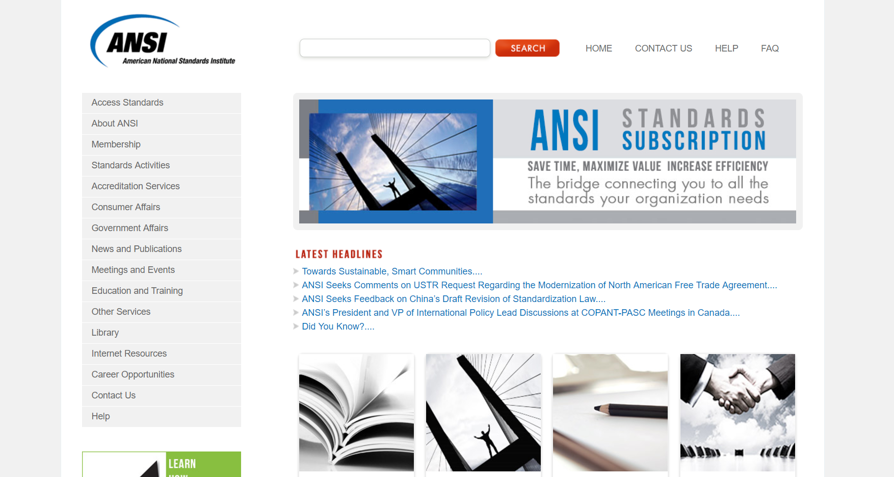
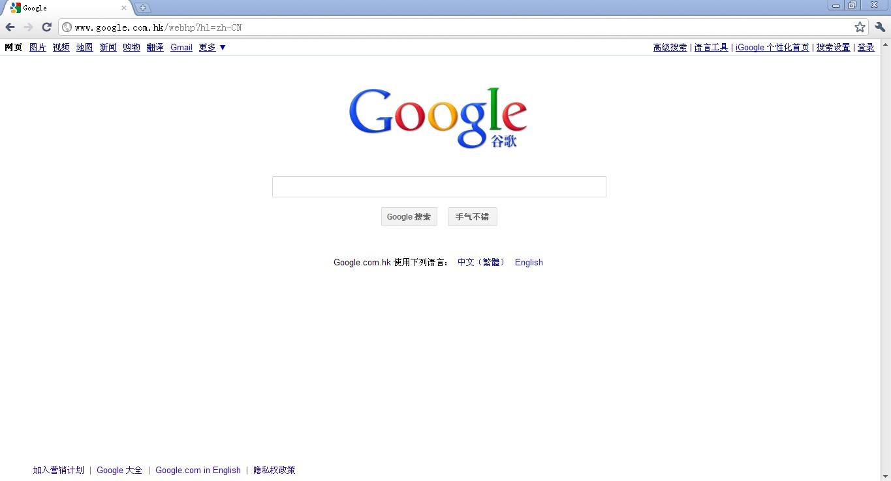

目前中国的国家标准分为强制性标准和推荐性标准，归口管理单位为国家标准化委员会，其中强制性标准可免费下载，而推荐性标准受版权保护，需要付费购买。
国军标则比较特殊，全称为国家军用标准，代号GJB，归口单位是中航工业301所，我国的军用标准主要分为三类：军用规范、军用标准、指导性技术文件。
国际上ISO和IEC标准，都是由民间组织发起成立的标准化机构，其所发布的绝大部分标准也均需付费下载或购买，价格都不便宜。
中国标准（国家标准、国军标、航空工业标准）
全部的强制性标准均可在线查阅全文，大部分均可下载，推荐性标准百分之五十以上可以在线阅读。

国军标的官方查询网站，提够购买链接，倒也不贵。

百度与谷歌，这个不多说了，直接搜索专利号，常常会有意外发现。
国外标准
ANSI 美国国家标准学会，提供了标准检索与购买链接，动辄上百美金的价格也确实喜人。

Google 外事问谷歌就对了，输入标准号加上PDF，会有意外惊喜
